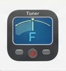
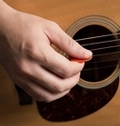
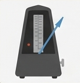
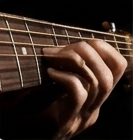
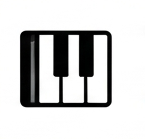

調音指南
快速學會標準調音與常見調音器使用方式，讓你的吉他每次都能發出正確音色。
查看調音指南結他神棍之家《技巧篇》這個網頁是為初學結他者而設，內容包括一些結他的樂理、調音的方法、撥奏技巧及一些結他的基本知識等‧‧‧但這個網頁仍在製作中，請各位見諒！

快速學會標準調音與常見調音器使用方式，讓你的吉他每次都能發出正確音色。
查看調音指南
掌握下撥、上撥與分解和弦的撥奏技巧，建立穩定且有表現力的右手彈奏習慣。
查看撥奏方法
從拍子與節拍開始，練習與節奏同步，讓你的演奏變得更加流暢自然。
查看節奏練習
逐步示範換弦與保養流程，讓你的吉他保持穩定音準與良好手感。
查看換弦方法
為你整理和弦、音階與調式基礎，幫助你快速理解演奏背後的音樂結構。
整理中本區包含標準調音、常見備用調音法與調音器使用教學。這是開始演奏前最重要的準備工作。
介紹撥片、手指撥奏、下撥/上撥技巧，以及如何練習常見的撥奏節奏模式。
節奏練習強調拍子感、節拍分解與簡單的節奏型練習，幫你建立穩固的節奏基礎。
詳細說明如何拆卸舊弦、安裝新弦、正確繃弦與調音，讓你的吉他保持最佳狀態。
將和弦、音階與調式以簡明方式呈現，讓你在彈唱與創作時更快理解音樂結構。